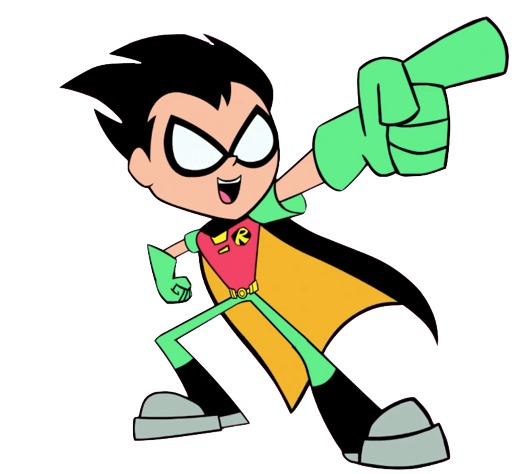

Raven

“ Azarth Metrion Zinthos! „
Raven is one of the members of the Teen Titans in the 2013 reboot
Cartoon Network TV series Teen Titans Go! and the main protagonist of
Teen Titans Go! Vs Teen Titans. Raven is a half-human, half-demon
sorceress living on Earth.
Starfire

As is typical of the Tamaranean race, Starfire has orange skin and completely green eyes with no whites or visible pupils. Her hair is also unusually long and thick compared to that of humans. She also has green eyes and a long, auburn hair. Starfire's outfit consists of purple skirt, top and long boots.
Beast boy

Beast Boy, is a member of the Teen Titans go. While he is gifted with the ability to transform into animals, .Although he has been a fighting force on the team ever since, Beast Boy prefers to leave the fighting job to the others. For him, it is about the food and games
Robin
Born to a family of circus performers, Robin Grayson had a tough childhood growing up. As seen in "Dude Relax", the carnival animals used to bully him nonstop, and, even worse, his parents were killed in a tragic acrobat accident. The mega-rich playboy Bruce Wayne, otherwise known as Batman, adopted Robin and made him his sidekick, Robin (also known as the "Boy Wonder").[1]